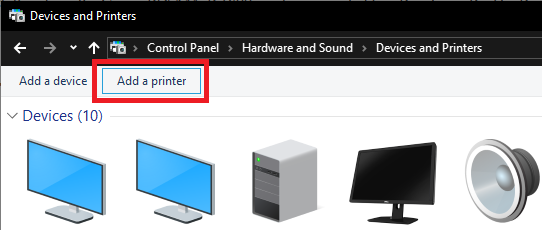
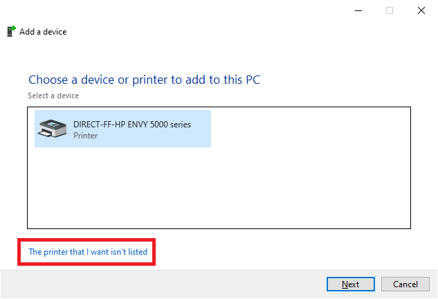
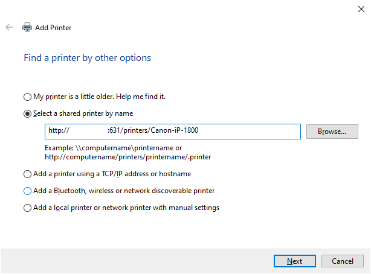

Installing the Canon Network Printer in Windows
Print Server Configuration
These instructions are for Windows 10 Users attempting to install and use the Canon PIXAM iP 1800 printer connected to a Raspberry Pi.
The Raspberry Pi is a Model B gen 1, running Rasbian lite (v10, "buster"). It is running CUPS as well (v2.2.10).
Windows 10 Setup Instructions
Follow these simple steps for setting up the printer server.
NOTE The IP address of the Raspberry Pi might change on reboot, requiring the printer to be updated!
Steps
-
Open "Control Panel" and navigate to: Hardware and Sound -> Devices and Printers
-
In the "Devices and Printers" GUI at the top, select "Add a printer"

-
Click the link "The printer that I want isn't listed"

-
In the "Add Printer" dialog that pops up, select the "Select a shared printer by name" radio button. Enter the following text "http://192.168.1.39:631/printers/Canon-iP-1800". Press "Next"

-
A dialog will pop up with the Printer name, press "Ok"
-
A success dialog will pop up with a "Print a test page" button, press "Finish"
-
Printer is ready for use